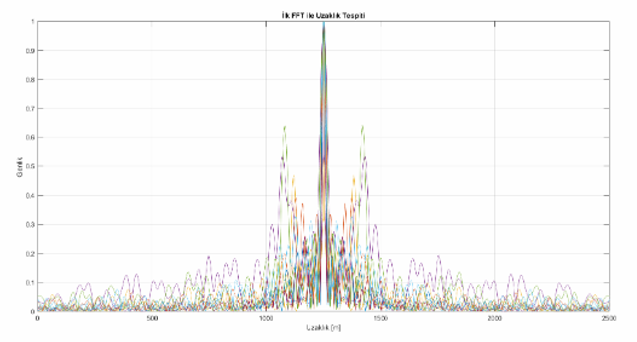
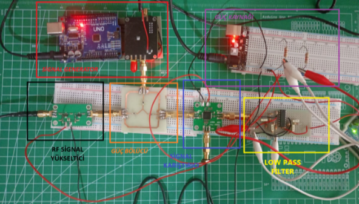
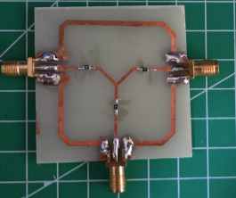
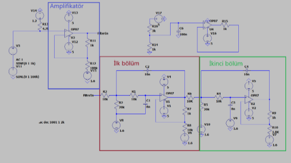

FMCW Radar: Range, Velocity & Ghost Target Detection
A comprehensive hardware and signal processing project focused on designing an FMCW (Frequency-Modulated Continuous Wave) radar system. The project aimed to accurately determine the range and velocity of multiple targets while developing a novel algorithm to eliminate "ghost targets" in complex environments.
The Challenge: The Phantom Target Problem
In FMCW radar systems, detecting a single target is relatively straightforward. However, in multi-target environments, the system often struggles with interference, resulting in the appearance of non-existent objects known as "ghost targets." Distinguishing these phantom readings from real targets using standard 1-D and 2-D Fast Fourier Transform (FFT) algorithms poses a significant challenge, often requiring complex 3D FFT calculations and multiple antenna arrays.
The Engineering Solution
Instead of relying on hardware-heavy multiple antenna setups, I proposed a signal modulation algorithm. By dynamically altering the angle (slope) of the transmitted triangular FM (chirp) signal and pairing it with a secondary ascending FM signal, we were able to isolate the real targets. The real targets maintained high amplitude consistencies across different modulations, while the ghost targets dropped in amplitude, allowing them to be successfully filtered out in MATLAB simulations.
Following successful simulations, I constructed a physical prototype utilizing an ADF4350 RF signal generator controlled by an Arduino UNO. I designed a custom Wye-configuration power splitter for low-frequency efficiency and a 4th-order Butterworth low-pass filter simulated in LTSpice. The radar data was then captured and processed using a high-performance Raspberry Pi 5 to perform real-time target analysis.
System Architecture & Results

MATLAB Simulation
Algorithm development using 1-D and 2-D FFTs to calculate range and velocity, validating the ghost target elimination theory.

Hardware Prototype
The physical system integrating the ADF4350 RF generator, mixer, RF amplifier, and custom power splitter interfaces.

Custom Signal Divider
A custom-designed Wye-configuration power splitter for efficient low-frequency signal distribution.

LTSpice Filter Simulation
LTSpice simulation of the 4th-order Butterworth low-pass filter and amplifier circuit designed to isolate the critical low-frequency beat signals.